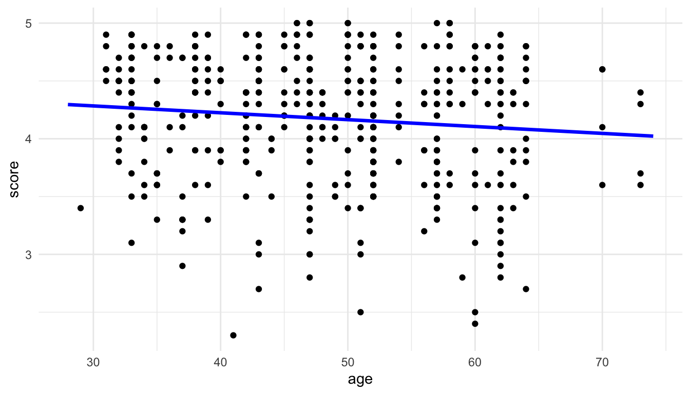
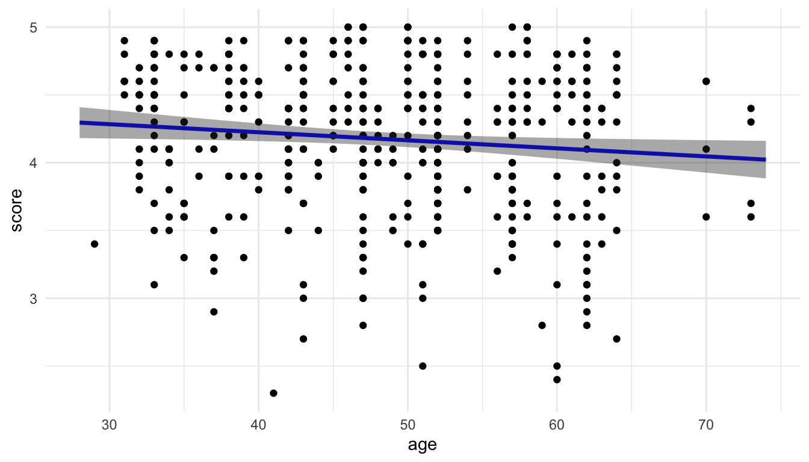
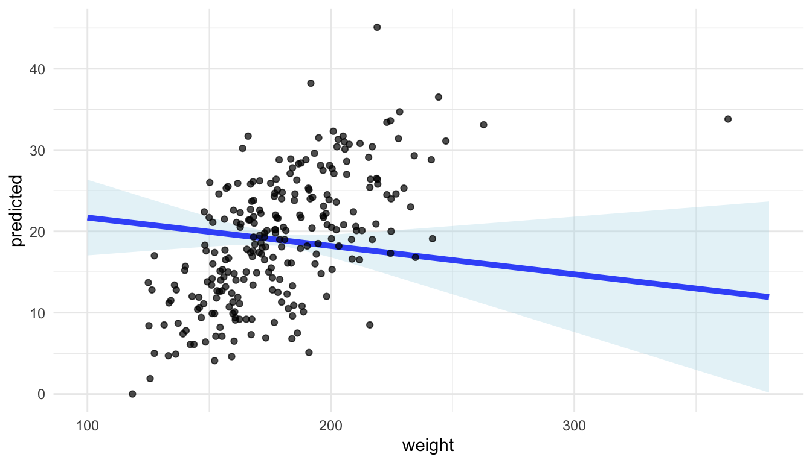

9 Linear Model Visualization
The purpose of this section is to visualize potentially complex linear models. We will begin with how to visualize a linear regression model with a single quantitative predictor in order to see how the package works. We will then expand our usage to include models with categorical predictors, interaction terms, and quadratic (or higher order) terms.
Throughout this section, we will use a data set on course evaluations at the University of Texas Austin from the openintro package. Each row of the data set corresponds to a course at UT Austin. Variables that we will use include course evaluation score (on a 1-5 scale), age of professor, bty_avg (the attractiveness of the professor), ethnicity (either minority or not minority) and gender (either male or female in this data set).
We will assume each observation is independent in our linear model. For those of you who have had STAT 313, it is more reasonable to fit a random intercepts model with prof_id as the random effect term, as each professor appears more than once in the data set (and it is likely that course scores for a professor are not independent).
9.1 Basic Strategy (Class Prep)
Our basic strategy for visualizing models is to
fit the model of interest with
lm()and check model assumptions.Either specify model terms that we want to make predictions for within
ggpredict()from theggeffectspackage or make a data grid explicitly withexpand_grid().Use
ggpredict()to predict the response variable according to the model for each row in the grid.Use
ggplot2to construct a meaningful plot with the model predictions from (3).
We will begin by fitting a linear regression model with score as the response and age (in years) as the predictor. Note that we can easily visualize this model because of how simple it is:
ggplot(data = evals, aes(x = age, y = score)) +
geom_point() +
geom_smooth(method = "lm")
Our first goal is to recreate the plot above “by hand” so that we can see what the different functions are doing in a relatively simple example.
Step 1: Fit the model.
Steps 2 and 3: Create a grid of predictor values and use ggpredict() to obtain predictions.
In this simple example, we only have one predictor: age. So, we want to create a tibble that has a few values of age to plug into the fitted model and obtain the predicted score for each value of age that we provide. We can do this with ggpredict() by providing the name of our fitted model object and the terms for which we would like to create predictions from (here, terms = "age" since age is our only predictor).
ggpredict(mod_age, terms = "age")
#> # Predicted values of score
#>
#> age | Predicted | 95% CI
#> ----------------------------
#> 28 | 4.30 | 4.18, 4.41
#> 34 | 4.26 | 4.17, 4.35
#> 40 | 4.22 | 4.16, 4.29
#> 46 | 4.19 | 4.14, 4.24
#> 50 | 4.17 | 4.11, 4.22
#> 56 | 4.13 | 4.07, 4.19
#> 62 | 4.09 | 4.01, 4.18
#> 74 | 4.02 | 3.88, 4.16What do we see in the output? We see that ggpredict() has constructed the predicted response (score) for eight different ages. Verify that you can obtain the first “prediction” of 4.30 by doing a by hand calculation with the fitted model object, plugging in age = 28 in the fitted regression equation.
You should also notice that there is a message in ggpredict() that there are actually more rows than the 8 rows we see here. We can convert the output to a tibble() and rename some of the terms in the output with:
ggpredict(mod_age, terms = "age") |> as.data.frame(terms_to_colnames = TRUE) |>
as_tibble()
#> # A tibble: 24 × 6
#> age predicted std.error conf.low conf.high group
#> <int> <dbl> <dbl> <dbl> <dbl> <fct>
#> 1 28 4.30 0.0581 4.18 4.41 1
#> 2 30 4.28 0.0535 4.18 4.39 1
#> 3 32 4.27 0.0490 4.18 4.37 1
#> 4 34 4.26 0.0447 4.17 4.35 1
#> 5 36 4.25 0.0405 4.17 4.33 1
#> 6 38 4.24 0.0366 4.16 4.31 1
#> # ℹ 18 more rowsSo ggpredict() actually constructed 24 predictions. While ggpredict() chooses which values of age are in our grid through a default mechanism, we can also more explicitly give the function values of age that we want in our grid:
ggpredict(mod_age, terms = "age [28:74]") |> as.data.frame(terms_to_colnames = TRUE) |>
as_tibble()
#> # A tibble: 47 × 6
#> age predicted std.error conf.low conf.high group
#> <dbl> <dbl> <dbl> <dbl> <dbl> <fct>
#> 1 28 4.30 0.0581 4.18 4.41 1
#> 2 29 4.29 0.0558 4.18 4.40 1
#> 3 30 4.28 0.0535 4.18 4.39 1
#> 4 31 4.28 0.0512 4.18 4.38 1
#> 5 32 4.27 0.0490 4.18 4.37 1
#> 6 33 4.27 0.0468 4.17 4.36 1
#> # ℹ 41 more rowsThis constructs a predicted score for a sequence of ages from 28, 29, 30, …., 72, 73, 74.
There are also certain “helper” arguments that ggpredict() provides. A few of the more useful ones are:
-
meansd(provide predictions at the mean age and at one standard deviation above and below the mean age) -
threenum(provides predictions at the median age, Q1, and Q3). -
fivenum(provides predictions at the median age, Q1, Q3, the minimum age, and the maximum age) -
all(provides predictions for all values of age in the original data set).
The syntax for overriding the default behavior of ggpredict() is to use [ ] following the predictor in the terms argument. Below, we obtain predictions for score at the minimum, Q1, median, Q3, and maximum values for age:
ggpredict(mod_age, terms = "age [fivenum]") |>
as.data.frame(terms_to_colnames = TRUE) |>
as_tibble()
#> # A tibble: 5 × 6
#> age predicted std.error conf.low conf.high group
#> <dbl> <dbl> <dbl> <dbl> <dbl> <fct>
#> 1 29 4.29 0.0558 4.18 4.40 1
#> 2 42 4.21 0.0300 4.15 4.27 1
#> 3 48 4.18 0.0252 4.13 4.23 1
#> 4 57 4.12 0.0335 4.06 4.19 1
#> 5 73 4.03 0.0681 3.89 4.16 1Note also that we obtain 95% confidence intervals for the mean response at each value of age in our grid: the lower bounds are in a column called conf.low while the upper bounds are in a column called conf.high.
Step 4: Use ggplot2.
The last step is to use ggplot2 to make a meaningful plot. In this case, we can construct a plot with score on the y-axis and age on the x-axis using the default predictions from ggpredict().
pred_evals <- ggpredict(mod_age, terms = "age") |>
as.data.frame(terms_to_colnames = TRUE) |>
as_tibble()ggplot(data = evals, aes(x = age, y = score)) +
geom_point() +
geom_line(data = pred_evals, aes(x = age, y = predicted),
colour = "blue", linewidth = 1.2)
Note that, because the original data and the grid used for the predictions are different data frames, we have to remember to adjust the data used for each geom appropriately, taking advantage of the fact that a local data argument and local aes() aesthetics will override the global arguments in the ggplot() function.
We can then use the geom_ribbon() function to add a measure of uncertainty to our plot and generate the 95% confidence band:
ggplot(data = evals, aes(x = age, y = score)) +
geom_point() +
geom_line(data = pred_evals, aes(x = age, y = predicted),
colour = "blue", linewidth = 1.2) +
geom_ribbon(data = pred_evals, aes(y = predicted,
ymin = conf.low,
ymax = conf.high),
alpha = 0.4)
So, we finally get a plot of the fitted model that matches with the default plot that we get from geom_smooth(method = "lm")!
This exercise is only to help us understand the steps to create the plot. For such a simple example, we would not go through the trouble of using this workflow to create this plot when it can easily be created without it. We will take advantage of this workflow to help us visualize more complex models.
Exercise 1. As we saw above, the grey “band” around the fitted regression line represents 95% confidence intervals for the mean response (score) for particular values of the predictor (age). In STAT 213, you also discussed 95% prediction intervals for a new observation’s response (score) for particular values of the predictor (age). What is the difference between a 95% confidence interval and a 95% prediction interval?
Exercise 2. Modify the code so that the grey band reflects 95% prediction intervals instead of 95% confidence intervals for the mean. Hint: there is an interval argument in ggpredict().
Exercise 3. By “hand”, verify that the predicted value in the first row of pred_evals can be calculated simply by plugging in 28 into the fitted regression equation obtained from mod_age.
Exercise 4. Fit the following model, which includes an age^2 term. Then, run the rest of the code in the chunk to obtain predictions for the age values in grid with both the mod_age model and the mod_age_sq model.
pred_evals
#> # A tibble: 24 × 6
#> age predicted std.error conf.low conf.high group
#> <int> <dbl> <dbl> <dbl> <dbl> <fct>
#> 1 28 4.30 0.0581 4.18 4.41 1
#> 2 30 4.28 0.0535 4.18 4.39 1
#> 3 32 4.27 0.0490 4.18 4.37 1
#> 4 34 4.26 0.0447 4.17 4.35 1
#> 5 36 4.25 0.0405 4.17 4.33 1
#> 6 38 4.24 0.0366 4.16 4.31 1
#> # ℹ 18 more rows
mod_age_sq <- lm(score ~ age + I(age ^ 2), data = evals)
pred_evals_sq <- ggpredict(mod_age_sq, terms = "age") |>
as.data.frame(terms_to_colnames = TRUE) |>
as_tibble()
pred_evals_sq
#> # A tibble: 35 × 6
#> age predicted std.error conf.low conf.high group
#> <int> <dbl> <dbl> <dbl> <dbl> <fct>
#> 1 29 4.29 0.0887 4.12 4.47 1
#> 2 31 4.28 0.0724 4.14 4.42 1
#> 3 32 4.27 0.0652 4.15 4.40 1
#> 4 33 4.27 0.0587 4.15 4.38 1
#> 5 34 4.26 0.0528 4.16 4.36 1
#> 6 35 4.25 0.0476 4.16 4.35 1
#> # ℹ 29 more rowsUse ggplot to make a plot that has (1) the fitted line from mod_age and the fitted curve from mod_age_sq, where the line/curves are coloured by the model type and (2) has the data points in the background of the plot. The code below stacks the two predicted data frames on top of each other and creates a new column called model that gives the names of the data frames as its levels.
plot_df <- bind_rows(lst(pred_evals, pred_evals_sq), .id = "model")
plot_df
#> # A tibble: 59 × 7
#> model age predicted std.error conf.low conf.high group
#> <chr> <int> <dbl> <dbl> <dbl> <dbl> <fct>
#> 1 pred_evals 28 4.30 0.0581 4.18 4.41 1
#> 2 pred_evals 30 4.28 0.0535 4.18 4.39 1
#> 3 pred_evals 32 4.27 0.0490 4.18 4.37 1
#> 4 pred_evals 34 4.26 0.0447 4.17 4.35 1
#> 5 pred_evals 36 4.25 0.0405 4.17 4.33 1
#> 6 pred_evals 38 4.24 0.0366 4.16 4.31 1
#> # ℹ 53 more rowsIs there evidence that a squared term is useful to include in this model?
9.2 Visualizing More Complex Models
The power of this model visualization strategy in general can really be seen in models where the coefficients are more challenging to interpret. For example, suppose that we fit the following model to the evals data:
mod_comp <- lm(score ~ age + bty_avg + age:bty_avg + gender,
data = evals)
mod_comp |> tidy()
#> # A tibble: 5 × 5
#> term estimate std.error statistic p.value
#> <chr> <dbl> <dbl> <dbl> <dbl>
#> 1 (Intercept) 5.24 0.362 14.5 2.08e-39
#> 2 age -0.0308 0.00730 -4.22 2.91e- 5
#> 3 bty_avg -0.204 0.0745 -2.74 6.48e- 3
#> 4 gendermale 0.213 0.0512 4.16 3.75e- 5
#> 5 age:bty_avg 0.00574 0.00156 3.69 2.53e- 4The model contains an interaction between age and bty_avg so the coefficients involving these two terms are very tough to interpret. Our goal is to create a plot that helps interpret this model.
We will use the same strategy outlined in the previous section to create a data frame with predictions for various values of age, bty_avg, and gender. In the terms argument, we now need to give values not only for age, but also for bty_avg, and gender. Note that we could provide specific values of gender for which we want to predict for with "gender [male]", but it is much more common to want predictions for each level of a categorical predictor.
pred_comp <- ggpredict(mod_comp, terms = c("bty_avg",
"age [threenum]",
"gender")) |>
as.data.frame(terms_to_colnames = TRUE) |>
as_tibble()We obtain 90 predictions: there are 3 unique values for age, 2 unique values for gender, and 15 unique values for beauty average (3 * 2 * 15 = 90). Note that ggpredict() will “assume” that the first term provided in terms is the term that we plan on putting on the x-axis of our plot, giving a relatively large number of unique values to make predictions for (15 here). Any subsequent terms are assumed to be grouping variables and are given fewer unique values (we specified 3 here for age and gender has 2 levels).
And the final step is to create a plot of the resulting model predictions. This is the step that requires the most critical thinking, as the plot will change depending on (1) how many models we fit (just 1 in this example) and (2) how many predictor variables we have.
Exercise 1. By hand, sketch a plot that shows the predictions from the mod_comp model in a meaningful way.
Exercise 2. Make the plot that you sketched in the previous exercise.
Exercise 3. We’ve discussed in this class the importance of showing uncertainty, when possible, using our visualizations. How could you modify the plot so that uncertainty is shown?
Exercise 4. Adjust the number of unique age values for which predictions are computed, and reconstruct the plot. Does it still make sense to use geom_ribbon() in the resulting plot?
9.3 Your Turn
Exercise 1. Fit a model of your choice with two categorical predictors, one quantitative predictor, and an interaction between the quantitative predictor and one of the categorical predictors. Construct a plot that helps interpret the coefficients from the fitted model. You do not need to show confidence bands on your plot. You should make a sketch of the plot you intend to create first!
Exercise 2. Modify the model from the previous exercise by getting rid of the interaction term. Using the workflow we have been using, construct a plot that compares the model with the interaction and the model without the interaction. Again, it might be helpful to sketch the plot first.
Exercise 3. The purpose of this exercise is to visualize a model that has more predictors than we can reasonably plot.
Consider the RailsTrails data set from the Stat2Data package. This data set contains house prices on a sample of homes in the Northampton, Massachusetts area. Suppose that we are interested in constructing a model to predict home price (Price2014, in thousands of dollars) with the following predictors:
-
Distance: the distance to the nearest entry point in the railstrails network, in miles, -
GarageSpaces: the number of garage spaces the home has, -
NumRooms: the number of rooms the home has, -
BikeScore: the bike friendliness of the home, on a scale from 0 to 100, -
SquareFeet: the square footage of the house (in hundreds of square feet), -
Zip: the zip code (either 1060 for Northampton or 1062 for Florence).
Suppose that all model assumptions hold. How would we be able to visualize this model?
We will make a sketch, talk through limitations, and construct a visualization in class.
Exercise 4. In all of our above models, we have assumed that there is not a lot of multicollinearity among the predictors in the model. The purpose of this exercise is to explore how a visualization of predictions when there is a lot of multicollinearity among the predictor variables is problematic. Recall that multicollinearity means that predictor variables are highly correlated with one another. The example below contains information on body measurements. The response variable, brozek, is a metric of body fat percentage while the predictor variables, weight, thigh, and adipos, all correspond to other body measurements that are much easier to obtain than brozek body fat percentage.
To do so, we will use a data set on body measurements, using brozek, a measure of body fat percentage, as the response variable and weight, thigh, and adipos as predictors.
- Examine the following scatterplot matrix. Explain why the model has a large amount of multicollinearity.
## install.packages("faraway")
library(faraway)
library(broom)
library(GGally)
ggpairs(fat, columns = c("brozek", "weight", "thigh", "adipos"))
- Examine the output from the following fitted model. What looks odd about the fitted model coefficients and about the p-values in the model?
mod <- lm(brozek ~ weight + thigh + adipos, data = fat)
mod |> tidy()
#> # A tibble: 4 × 5
#> term estimate std.error statistic p.value
#> <chr> <dbl> <dbl> <dbl> <dbl>
#> 1 (Intercept) -19.1 4.59 -4.16 4.41e- 5
#> 2 weight -0.0349 0.0296 -1.18 2.40e- 1
#> 3 thigh -0.0472 0.131 -0.359 7.20e- 1
#> 4 adipos 1.85 0.203 9.12 2.59e-17Before completing the next part, explain what you think a plot will look like that has
weighton the x-axis and augmented predictions forbrozekat specific values ofthighandadiposon the y-axis.Run the code below to construct the plot. Why does the model look like it fits the points very poorly?
fat_preds <- ggpredict(mod, terms = c("weight")) |>
as.data.frame(terms_to_colnames = TRUE) |>
as_tibble()
ggplot(data = fat_preds, aes(x = weight, y = predicted)) +
geom_line(linewidth = 1.7, colour = "blue") +
geom_ribbon(aes(ymin = conf.low, ymax = conf.high),
fill = "lightblue", alpha = 0.3) +
theme_minimal() +
geom_point(data = fat, aes(y = brozek), alpha = 0.7)